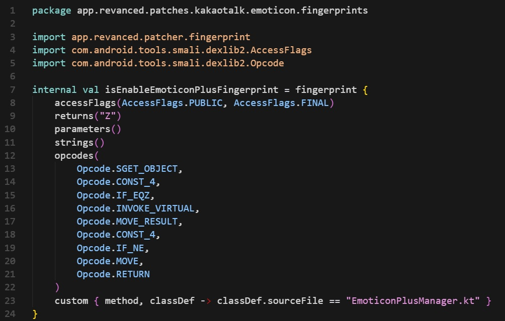
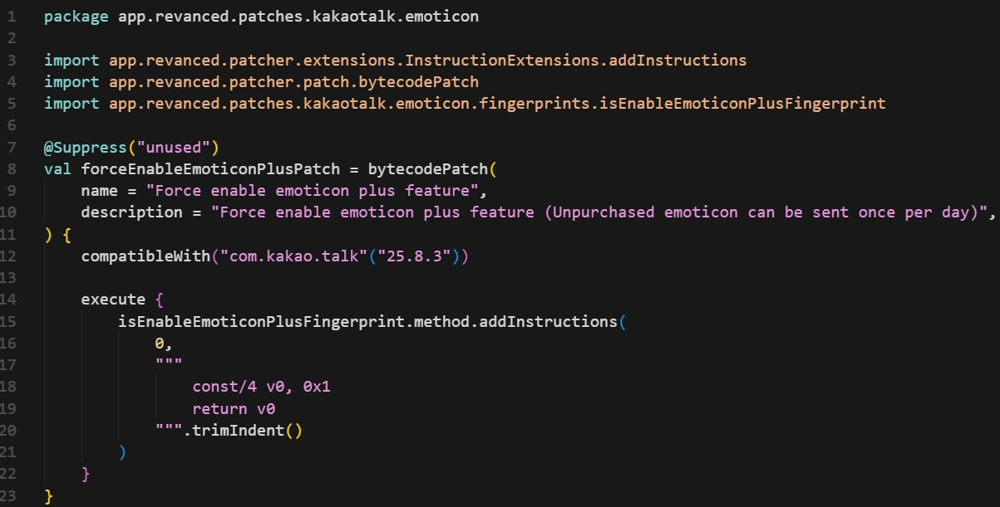

[25_10_19]Zero-Trustの重要性：カカオトークの事例から学ぶ「クライアント信頼」の危険性
2025-10-19 | 技術本記事はネット上に公開されて知られているセキュリティ欠陥の例をもとにしたセキュリティの
教育・研究目的の分析であり、違法行為を助長する意図はありません。
プロダクトの許可されていない偽造・改変などは法律違反の可能性があり、その責任は全て行為者にあります。
もし問題のある記載があればご連絡ください。速やかに対応します。
韓国で不動の1位を誇るメッセンジャーアプリ、カカオトークが先日のアップデートで批判が殺到しています。
以前と比べて全く違うUI/UXの変化に不満を持つ人が増えた結果、
Google Playストアの評価は5.0点満点中1.0点を記録しました。
しかし、これを元に戻す非公式な方法が登場しました。
韓国語記事：https://www.imaeil.com/page/view/2025101712350828442
記事によると、ある開発者がカカオトークのRevanced Patchとそのソースコードを開発し
コミュニティーで共有したとのことです。
パッチを適用したアプリの主な機能は
友達タブのUI復元、ショート動画タブの削除、そして「怪しげな」機能「スタンプPlus強制適用」などです。
スタンプPlusは定額料金で有料スタンプが使い放題になるサービスです。
有料サービスがクライアントの操作のみで使えるようになるという事実は
サーバーサイドの重大なセキュリティ脆弱性を示しています。
例えば、悪意を持ったあるハッカーがクライアント側でJavascriptを弄って
自身のプロフィールの所持金が１０００億円だというデータを送信します。
サーバー側は基本的にこのハッカーが送った１０００億円という情報を信頼してはいけません。
サーバーはハッカーが送った１０００億円というデータは無視して
サーバーのデータベースに記録されている所持金のみを確認します。
クライアントは絶対に信頼してはならない、これがZero-Trustの基本的な原則です。
もしこのようなサーバー側検証が整っていなかったら、ハッカーは1秒で億万長者になれるでしょう。
従って、クライアントのロジックでは絶対に起こらないシナリオだと言っても
クライアントから受けるデータは常に操作の可能性がある、と見なすべきです。
スタンプPlusの強制適用機能はクライアントを信頼したことで成立する脆弱性攻撃の一環です。
スタンプ Plus強制適用パッチの核心のコードはこちらです。


アンドロイドのアプリはKotlinのコードがバイトコード(DEX)に変換されてAPKにビルドされます。
その後ランタイムのときバイトコードはJVMによって機械語に変換されます。
まだ完全な機械語に翻訳されていないため、このDEXはdexlib2とを通じていじることができます。
このパッチはクライアント側の仮称isスタンプPlusActivated()のような役割のメソッドを検知します。
そのメソッドのパターンは開発者が設定した条件、つまりfingerprintによって検知されます。
これが検索条件です。
アクセス指定子、リターンタイプ、DEXの命令パターン、ソースファイルなどを条件として
仮称isスタンプPlusActivated()メソッドを指定します。
その後
.method.addInstructions()を使って仮称isスタンプPlusActivated()のメソッドの最上段に
return true
を挿入します。
そうするとアプリの動作中ユーザーがスタンプPlusを購入したかを確認する際に
購入したか否かは関係なくいつも「そうです」という答えになってしまいます。
カカオトークのサーバー側はこれについて「分かりました、有料サービスを提供します」
ということになるのです。
サーバー側は「そうですか？もう一度購入履歴を確認してみますね」のように再検証を行うべきです。
これがクライアントのいうことは必ず疑うZero-Trustの原則です。
カスタム改造アプリで署名や完全性検査を迂回しても、異常な使用パターンはログから検出されます。
サーバー側としては購入履歴のないユーザーの有料サービス使用、特定APIへのアクセス頻度のようなパターンで
攻撃の状況や原因を探すことができます。